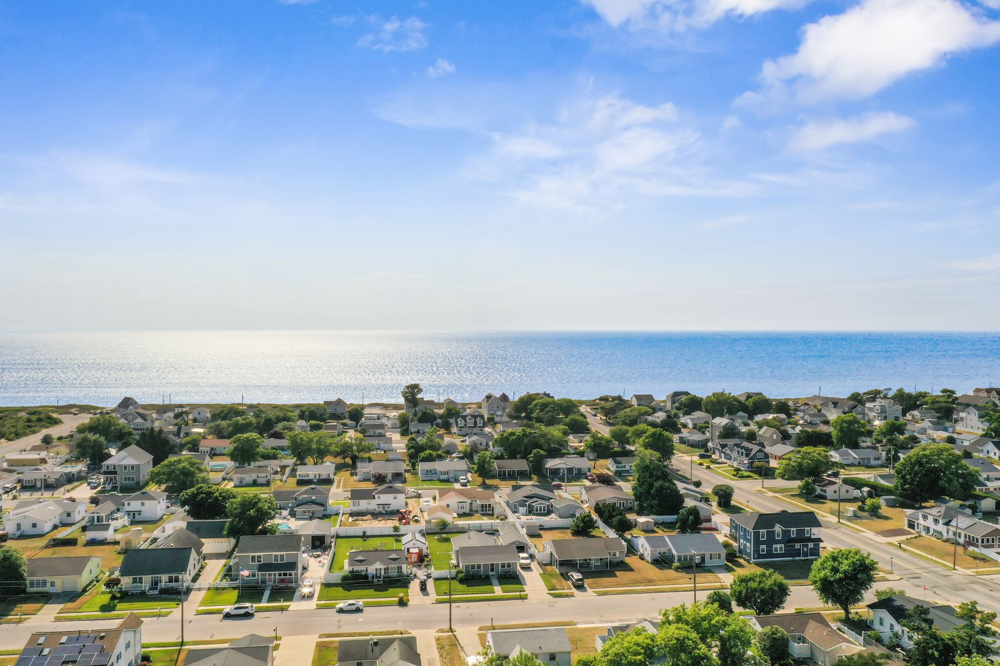
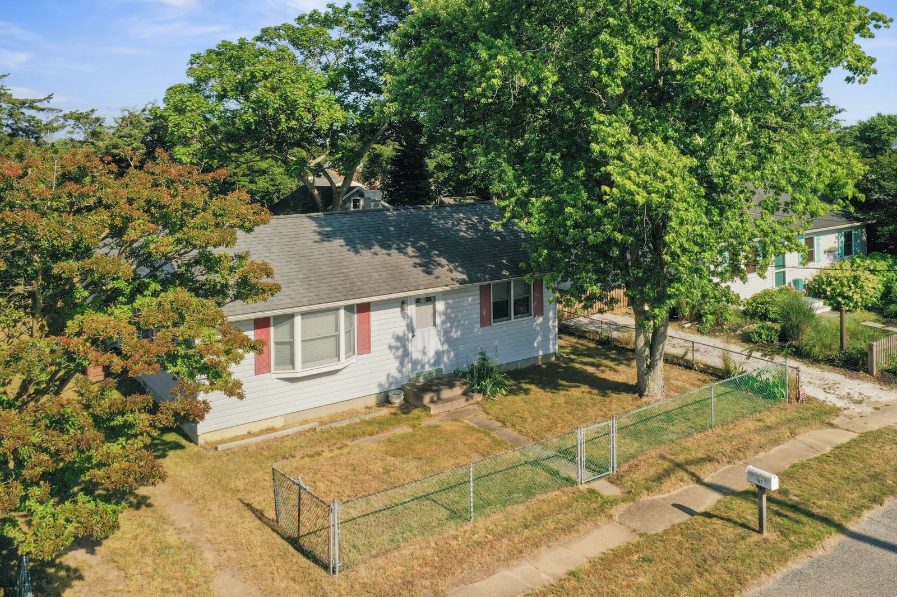
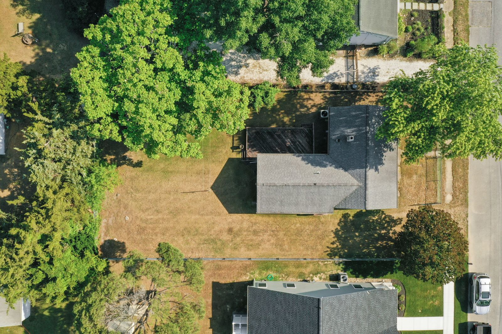
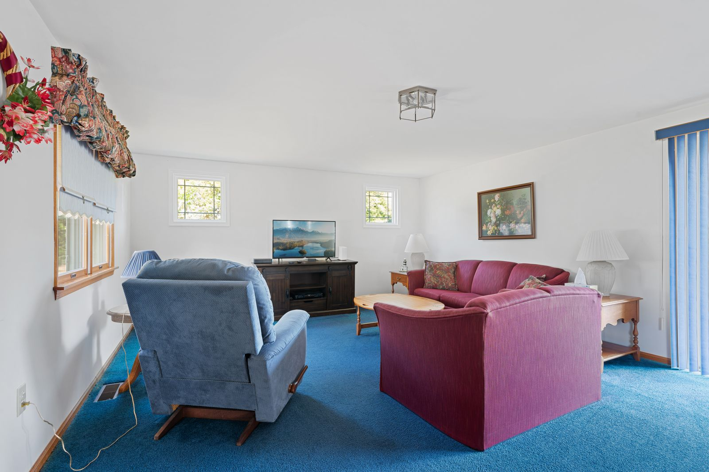
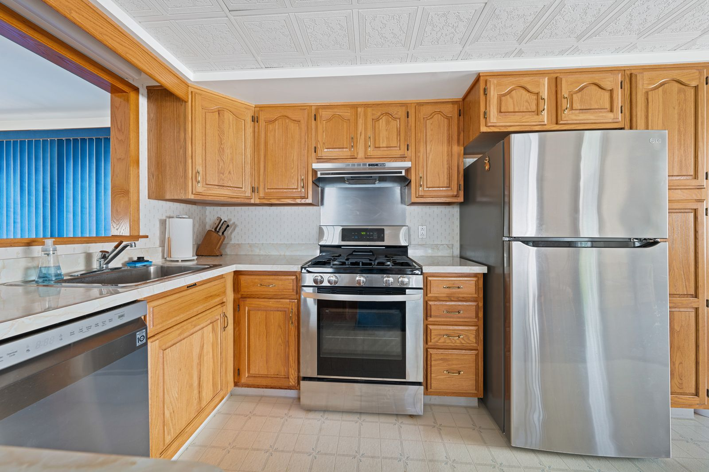
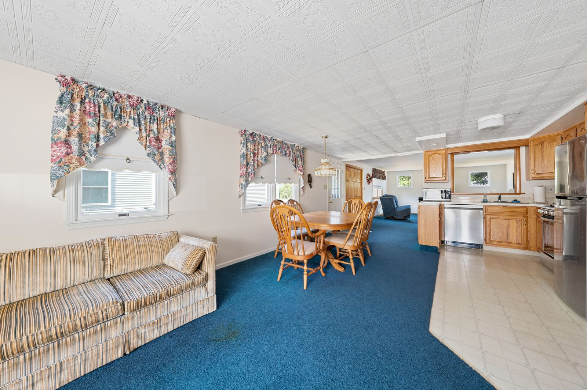
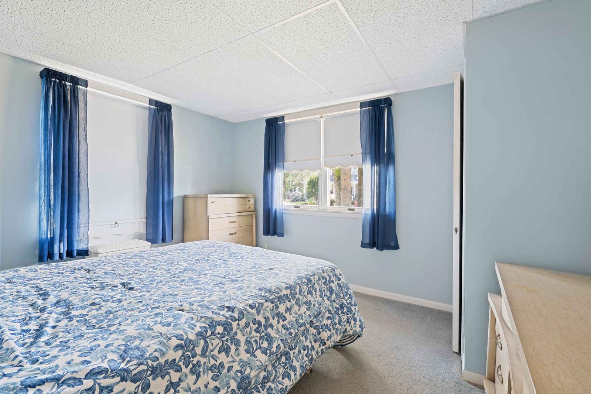
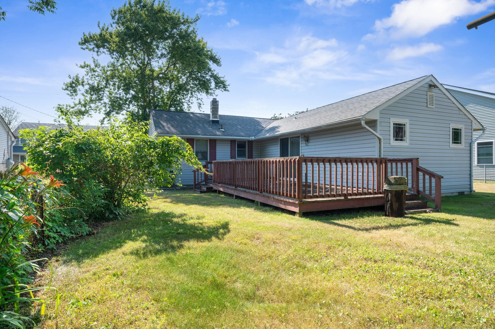
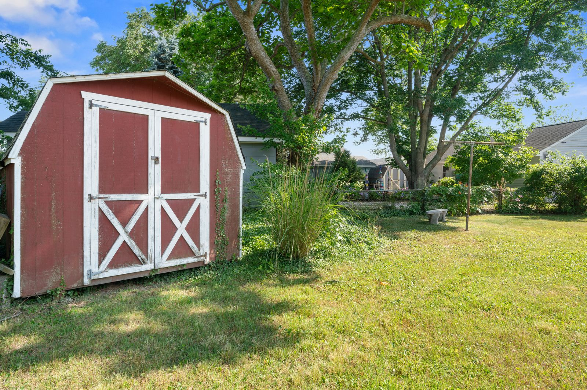

Real Estate Photography in North Cape May, NJ: 707 Adriatic Ave
About this North Cape May listing shoot
Listing Pixl provided professional real estate photography for this North Cape May, New Jersey property at 707 Adriatic Ave 08204. A North Cape May ranch with a fenced yard, a back deck and aerials toward the bay. The shoot was booked by Jason Ruffenach to give the listing scroll-stopping photos for the MLS, Zillow, and social media.
This ranch on Adriatic Ave in North Cape May has red shutters, a fenced yard with shade trees, a back deck and a barn-style shed. The shoot covered the bright living room, the oak kitchen, the dining area and a bedroom, and the drone showed the home, the lot and the Delaware Bay a short distance away.



















What we photographed
- Front exterior with red shutters
- Drone views of the home, lot and shade trees
- Aerial over North Cape May toward the bay
- Living room, kitchen and dining area
- Back deck, backyard and red barn-style shed
Real estate photography services delivered
This North Cape May NJ shoot included HDR listing photography with professional editing and color correction, delivered next-day and sized ready for the MLS. Drone aerial photography showed the lot, the setting, and the surrounding North Cape May neighborhood — the views that make South Jersey listings stand out online.
Real estate photography in North Cape May, NJ
North Cape May sits in Lower Township between Cape May and the Delaware Bay, with blocks of ranches and cottages a short walk or bike ride from the bay beaches. Buyers here often care about how close the beach is, so drone aerials that show the route to the water and the size of the lot do a lot of the selling.
See packages, FAQs and every shoot in town on our North Cape May, NJ real estate photographer page.
More shoots near North Cape May
Lock In a North Cape May, NJ Real Estate Photographer
Selling in North Cape May or anywhere in Cape May County? Listing Pixl shoots across North Cape May, Cape May, Villas, Cape May Point, Rio Grande, Wildwood Crest, and surrounding South Jersey towns. Compare our current packages online. Call or text (609) 780-7027 or lock in your shoot online.